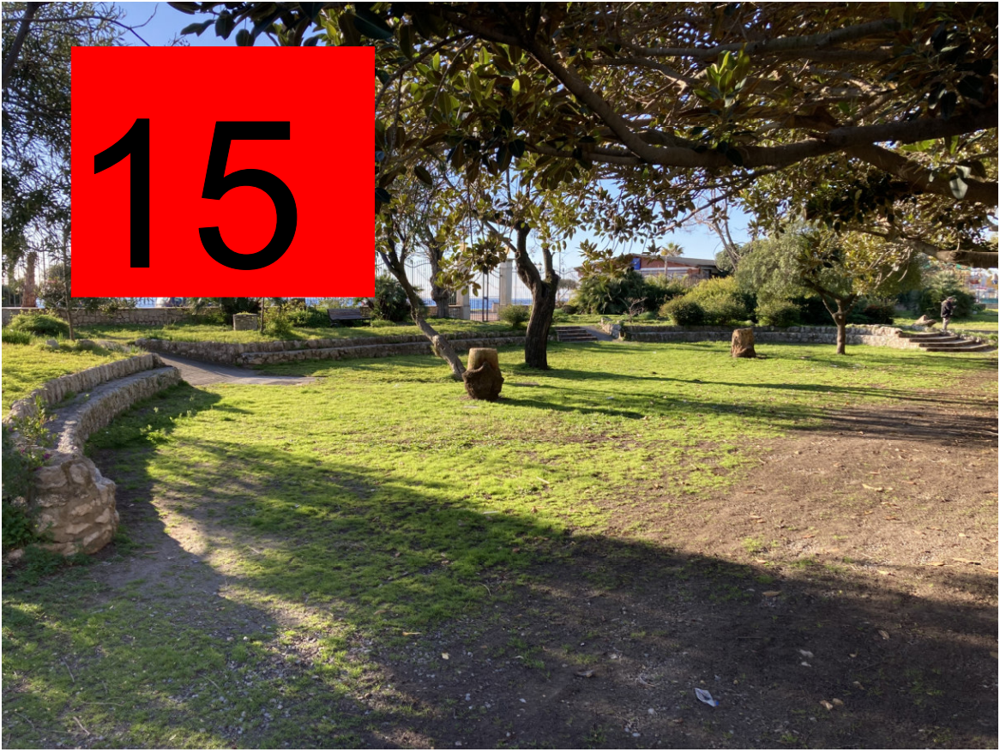

LA PERTINENZA DEL PROGETTO
Se sono stati letti i punti precedenti sarà più semplice convenire con tutte le criticità sollevate di seguito, e giudicare personalmente se sono o meno presenti le condizioni che conducono alle stesse nostre conclusione.
L’argomento chiave della nostra critica può essere riassunto comunemente con il solito “eccesso di cementificazione” ma come all’interno di questo contenitore mediatico si butta un pò tutto. è stato deciso di essere più articolati anche per essere in grado in un secondo tempo di proporre soluzioni risolutive.
Ad esempio, per aprire un dialogo su una base chiara e accessibili alla maggioranza delle persone interessate, la pertinenza dell’intervento è stata valutata la proporzione, individuate a suolo, delle superfici dette vegetali o naturali comparativamente a quelle “artificializzate” come il cemento o materiali lapidei equiparabili dove non ci cresce nulla. Se sono state lette le schede di approfondimento, sarà chiara al lettore che la sola valutazione di questi parametri “superficiali” sono da soli insufficienti a valutarne l’impatto ed il contributo ecologico su un ecosistema complesso di un intervento del genere, sarebbero da considerare tanti altri parametri che all’interno delle varie relazione specialistiche al progetto non sono neanche nominate: quantificazione dello spessore del suolo vegetale, determinazione delle sue qualità agronomiche, composizione chimica, la natura del sottosuolo, l’estensione e la densità complessiva della canopea la parte che contribuisce di più al mantenimento e sviluppo dell’ecosistema. Però non avendo altri dati ufficiali da confrontare ci si limita quindi a questi parametri superficiali.
Un Esame preliminare dell’impatto del Progetto
Per assolverci con immediatezza di qualsiasi bias interpretativo sovrapponiamo la foto satellitare della villa comunale immortalata nell’anno 2020 alle aree d’intervento evidenziate un alcune tavole riassuntive del progetto riproposto appresso con un area schiarita.
Visivamente l’anfiteatro più in alto, quello circoscritto all’interno dell’area delimitata dalla recinzione perimetrale dell’attuale villa comunale, ricopre una area decisamente verde di grande dimensione, il bilancio è ampiamento negativo per la vegetazione erbacea o arbustiva, tutta quella zona schiarita è sostituita da materiale cementizio o lapideo, possono essere green o permeabili quanto più possibile, sopra non ci cresce niente eccetto le temperature nel periodo estivo.
Certo è stata prevista la piantumazione di numerose palme Washinqtonia in periferia dell’anfiteatro, ma questa tipologia d’albero non ha assolutamente lo stesso impatto nell’equilibrio dell’ecosistema rispetto agli alberi a foglie larghe eliminati o spostati. Questo tipo di Palma viene scelto per il suo ridotto bisogno di acqua e la minima manutenzione di cui necessita. Se quest’ultimo aspetto favorisce un risparmio delle spese a carico del Comune può essere in un primo tempo positivo, ma con il fatto che assorbe poca acqua,chimicamente, significa che contribuisce poco alla conversione del diossido di carbonio in ossigeno prossimale, e sorge spontanea la domanda perché avere installare un sistema d’irrigazione a servizio delle palme quando gli altri alberi ne necessitano di più.
-42%, un risultato di prima approssimazione
“42 è la risposta alla domanda fondamentale sulla vita, l’universo e tutto quanto” - Douglas Adams - Guida galattica per gli autostoppisti.
L’esame precedente è molto empirico, ora procediamo ad una analisi più agguerrita, esponiamo quella che è stata presentata all’incontro organizzato presso l’YMCA il 23 Marzo 2024.
la documentazione ufficiale del progetto è pubblicata e scaricabile qui
La tavola di riferimento per il calcolo del rapporto delle aree artificializzate confrontate con quelle naturali è la Tavola 3.3 PLANIMETRIA PERMEABILITA’ R2, nella figura è riproposta un’immagine rielaborata per avere a schermo tutte le informazioni agevolmente accessibili con un unico sguardo, il pdf originale, era pensato per essere stampato o visualizzati su ampi schermi e propone un layout (impaginazione) diverso:

I dati presentati sono quindi per la parte ante operam (prima dei lavori):
- Superfici Naturali 5.743,30 m²
- Aree Non Permeabili 3.387,60 m²
Da notare che la parte in alto a sinistra dell’area è attualmente naturale, il fatto che sia utilizzata giù come area di parcheggio o stazionamento di veicoli vari non permette alla vegetazione di permanere, lasciando la terra scoperta, il terreno è relativamente irregolare con leggeri avvallamenti di una diecina di centimetri al massimo. Dopo le piogge, ovviamente l’area è ricoperta di pozzanghere e fango.
Per la parte Post Operam (ad opere compiute) abbiamo le seguenti superfici finali:
- Superfici Naturali: 3.299,17 m²
- Aree Permeabili: 5.453,23 m²
- Aree non Permeabili: 275.06 m²
Le aree permeabili e non permeabili rientrano in quelle superfici non naturale.
Comunque la diminuzione dell’area verde è pari al:
(1 - 3.299,17 / 5.453,23) x 100 = -42.56 %
Potremmo rifare il calcolo contabilizzando i 1.165 m² della parte attualmente usata come area di stazionamento provvisorio per pervenire una diminuzione di circa -56.70 %, ma come all’interno della villa ci sono dell’aree lapidee o cementizie per favorire la deambulazione, valutiamo a pari come compensazione la superfice di detto parcheggio provvisorio. Le aree vegetali di piccole dimensioni distaccate dalla parte rigogliosa e densamente vegetalizzata, non hanno ovviamente lo stesso impatto o contributo al funzionamento complessivo del polmone verde, ma vengono contabilizzate comunque nelle aree vegetalizzate. Il nostro compito non è d’ispezionare il minimo difetto eccepibile, ma quello d’indirizzare il corso degli eventi verso una meta migliore.
In sede di confronto con i responsabili dell’Ufficio tecnico e dell’amministrazione composta dagli assessori ai lavori pubblici e del verde urbano, ci è stato assicurato che le superfici sono state definite molto meglio in una tavola che sarà pubblicata al più presto per essere consultata ed esaminata con più attenzione.
In questo momento, secondo il nostro umile parere, ci sembra difficile argomentare che è stato rispettato il principio DNSH, l’ecosistema della Villa Comunale è stato immancabilmente ridotto e per conseguenza la sua resilienza è stata messa a repentino con l’analisi dei dati che abbiamo a nostra disposizione. Vedremmo se saranno forniti maggior chiarimenti. Intanto il confronto di una fotografia pubblicata su tripadvisor con alcune simulazione grafiche del risultato finale inserite nel progetto si esprimono forse meglio di qualsiasi tabella :


Oltre 42 …
Come è stato detto le considerazioni circoscritte solamente alla superficie vegetale rimasta è un buon punto di partenza ma non sufficiente a dirigere un intervento di riqualifica o restauro della Villa Comunale. Elenchiamo una serie di aspetti che andrebbero ugualmente se non di più valutati in concomitanza. Nella parte finale si sono ripresi punti per punti alcune direttive tratte Linee guida per la gestione del verde urbano e prime indicazioni per una pianificazione sostenibile che dovrebbero applicarsi obbligatoriamente al presente progetto, soprattutto se si vuole aderire a tutte le prescrizioni imposte dal principio DNSH legato indissolubilmente ai finanziamenti del PNRR, con evidenziato in rosso i motivi per i quali questi requisiti non sono sodisfati.
Per quanto riguarda la preservazione del suolo, edotti delle nozioni elementari presente nel riassunto, si può facilmente intuire perché la pavimentazione in prossimità delle radici dei ficus monumentali sia fortemente sconsigliata; intralcia i meccanismi di scambio tra habitat adiacenti. Ad esempio impedisce l’accumulo naturale di sostanza organica come le foglie autunnali che ricoprono il suolo e migliorano il terreno proteggendolo dagli sbalzi termici e contribuiscono allo sviluppo dei microrganismi quali funghi simbionti e micorrize. Il fenomeno è così flagrante che in alcuni giardini è espressamente vietato l’asportazione di sostanza organica dal terreno così mettere a nudo l’apparato radicale oppure severamente vietarne l’interramento eccessivo con terra vegetale, sono tutti interventi che possono provocare degli squilibri nella rizosfera tali da addirittura distruggere quel microcosmo delicato ed indispensabile per la salute dell’albero, all’immagine del microbiota dell’apparato digestivo dell’essere umano.
Ora possiamo capire perché persino la premura di utilizzare un vespaio areato (sistema tipo cupolex) per proteggere le radici dell’albero dalle sollecitazioni dovuto al calpestio non controbilancia tutte le contro indicazioni succitate. Anzi se consideriamo il caso straordinario in cui avvenisse per ipotesi una mareggiata: l’acqua salata del mare inonderebbe l’intercapedine d’aria inizialmente sistemata per garantire l’aerazione in tempi normali, in queste precise condizioni eccezionali quanto tempo ci vorrebbe perché le condizioni le condizioni tornassero alla normale in uno spazio confinato.
Tra l’altro questa sistemazione di una pavimentazione rialzata andrebbe a ridurre ancora di più l’altezza libera sotto i rami di questi alberi monumentali già bassi e restrittivi per quanto riguarda l’attività da svolgersi sotto.
Per quanto riguarda la canopea, è la parte più attiva e per noi umani quella più preziosa, sede della fotosintesi, converte il minaccioso diossido di carbonio in ossigeno. Questo processo chimico è fortemente endotermico, l’evaporazione acquea contribuisce al raffrescamento come se fossero operativi dai 5 ai 10 condizionatori d’aria per 20 ore al giorno, senza consumo elettrico. Si può capire l’importanza di questo dato, quanto sia di vitale importanza nel momento in cui si pianifica il taglio, lo spostamento o la potatura dell’intera chioma di un albero! Ne subiscono le gravi conseguenze anche gli alberi vicini rimasti intatti; la zona d’intervento conosce inevitabilmente un aumento di temperatura media. Il fenomeno appare innocuo ma l’efficacia della conversione garantita dalla fotosintesi diminuisce fortemente con l’aumentare della temperatura media circostante, il processo benefico di conversione s’indebolisce, meno fotosintesi, meno evaporazione e a sua volta nuovo aumento di temperature, sono i temuti cicli di feedback positivi nella dinamica dei sistemi, più comunamente chiamati circoli viziosi. Ecco spiegato rapidamente uno dei motivi soggiacente al favorire l’aggregazione del verde pubblico: diventa più resiliente al riscaldamento climatico e sicuramente più piacevole per la cittadinanza.
Alla luce di quanto appena trattato e dall’osservazione della raccolta di fotografie satellitare che ritraccia sommariamente l’evoluzione della canopea della Villa Comunale dal 2010 ad oggi, si osserva una netta diminuzione della stessa, che sia per inasprimento del clima o per manutenzioni inadeguata, o del tutto assente, come più volte specificato da diverse parti, la situazione è purtroppo questa. Ora la domanda è: la riqualificazione proposta rimedia o rinforza questa tendenza?
Per quanto riguarda l’aspetto botanico, la rimozione di alberature circostante porterebbe come altro effetto negativo la forte probabilità che i ficus andassero ad occupare lo spazio “vitale” adesso liberato, estendendo ancora di più i loro rami verso mare o il sole. La chioma mostra già una disimmetria accentuata verso sud. Un estensione maggiore in quella direzione potrebbe esercitare sul tronco, per effetto leva, sforzi tali da deteriorarlo. Oltretutto l’allargamento della chioma ricoprirebbe maggiormente l’area che il progetto prevede di riservare alla scena centrale quando l’altezza disponibile sotto i rami ne limita già la fruizione prima dei lavori. Bisogna tenere conto che quei alberi sono dei ficus tipo magnolioide, alberi sempreverde tra quelli più grandi tra i alberi di fico coltivati, crescono da 22 a 55 metri in altezza e da 21 a 40 metri in larghezza, a ragione di 90 cm in media l’anno, fino ad una venerabile età di 150 anni.
A parere del comitato, per tutti i motivi sopracitati in un ambito di restauro del verde pubblico, così come viene classificato l’intervento nella scheda riassuntiva della proposta finanziata, le alberature avrebbero dovute essere rispristinate. Sulla pagina Villa Comunale: Genius Loci sono raccolte delle imagine che ritracciano le trasformazioni apportate al sito. Se erano emerse, a suo tempo, delle valide motivazioni per rimuoverle, era indispensabile oggi individuarne la sussistenza di dette cause, e possibilmente rimediandone oggi le origini per preservare la salute avvenire della Villa. Immaginiamo che il taglio fosse stato reso necessario a causa di patologie o altri impedimenti, queste informazioni costituivano già una base di studio di notevole importanza per assestare o trattare l’ambiente perché potesse finalmente offrire delle condizioni di sviluppo migliori alle parte superstite.
Per tutti questi motivi, il comitato valuta molto negativamente la pavimentazione nei pressi degli alberi monumentali e suggerisce fortemente che non venga eseguita lasciando libera la superficie corrispondente all’estensione delle chiome soprastante.
Per sostenere ulteriormente le nostre tesi, il comitato ha individuato alcuni punti essenziali estrapolati dalle Linee guida per la gestione del verde urbano e prime indicazioni per una pianificazione sostenibile, per ognuno di essi sono evidenziati alcuni motivi, secondo il nostro umile parere, per i quali andrebbe rivisitata la proposta progettuale, ben inteso nel limite del possibile, oppure mettere i suggerimenti a dimora per i prossimi interventi.
I criteri di realizzazione di aree verdi ritenuti più attinente alla presente vicenda sono:
- priorità inserimento nel sistema del verde urbano esistente
- La morfologia del verde urbano esistente, dalla raccolta delle fotografie satellitare degli anni precedenti, è stata profondamente alterata dalla compenetrazione urbana realizzata, gli alberi che componevano il filare frontistante agli alberi monumentali erano stati tagliati persino persino prima del rilievo e sostituti da quelli progettati a ridosso della tribuna nord allontanandoli dalla loro posizione originale all’interno della Villa Comunale.
- Massimizzare accorpamento per evitare frammentazioni e collocazione residuali
- L’aggiunta della vegetazione è stata realizzata principalmente ad isola, distanziate dal fulcro vegetale originario in periferia
- Usi materiali ecocompatibile e riciclati e riciclabile che possono essere facilmente demoliti e riutilizzati o riciclati al termine dell’uso,
- Il cemento armato utilizzato per la costruzione delle tribune non rientra in questa descrizione soprattutto nella fase di remissione, infatti all’inizio del cantiere è stata difficoltosa la rimozione dei blocchi di cemento inseriti dai pregressi interventi, sono dovuti intervenire di grossa potenza col rischio di creare una eccessiva compattazione dele terreno vegetale.
- Biodiversità; composizioni vegetali miste rispetto a quelle in purezza, utilizzando specie che permettano l’alimentazione e il rifugio per insetti, uccelli e piccoli mammiferi e dell’avifauna
- Sono stati previsti d’inseriti solamente le classiche palme, sarebbe stato auspicabile aggiungere essenze aromatiche per allontanare insetti attratti dalla futura illuminazione per la comodità degli spettatori
- Gestione acque pluviali (vasche, bacini di ritenzione, fossati inondabili)
- Il dimensionamento dell’impianto di recupero dell’acque piovane è stato dimensionato solamente per garantire la gestione delle piogge “di intensità fino a mm 7 che equivale al valore medio nei peridi estivi per la città di Siderno. Superati questi valori limite le acque piovane in esubero verranno smaltite tramite rete comunale delle acque di raccolta pubbliche” (p.7 tav 01.1- Relazione specialistica dei sottosistemi a rete). Quando normalmente il sistema di recupero con le vasche di accumulo andrebbe dimensionato in funzione delle precipitazioni annue, in particolare di quelle più intense, proprio per poterle ridistribuire nei momenti più arridi.
- Gestione suoli: preservare la fertilità del suolo adottando tutte gli accorgimenti per conservare e migliorare le caratteristiche chimiche, fisiche e la componente biologica del terreno;
- analisi del terreno,
- risulta mancante qualsiasi analisi del terreno in merito alle caratteristiche su elencate
- gestione movimenti e accantonamento dei primi strati vegetali del terreno,
- sono assenti indicazioni specifiche sulla gestione dei primi strati vegetali del terreno
- analisi del terreno,
- Rilievo in scala adeguata di tutti gli elementi biotici ed abiotici
- Sono stati rappresentati in pianta solamente gli alberi monumentali escludendo il resto della vegetazione arborea e arbustiva
- Tabella con il calcolo della superficie di copertura arborea, arbustiva e erbacea. Oltre a questo sarà necessario elaborare una stima della copertura arborea a 25 anni dal collaudo.
- Dagli elaborati pubblicati all’albo pretorio non risultano rilevati o indicati questi dati
- Calcolo del fabbisogno idrico annuale stimato
- Mancando i dati precedenti, il fabbisogno non può essere determinato con sufficiente precisione, era anche un dato necessario per il dimensionamento dell’impianto di recupero delle acque piovane citato prima.
Il comitato pensa che sono valutazioni fondate su ragionamenti e dati slegati dall’apprezzamento estetico, e quindi del tutto obbiettivi, che trovano fondatezza nel quadro normativo imposto dal principio cardine “di non recare danni significativi” all’ambiente. Ed è per questo motivo che s’invita la pubblica amministrazione a valutarle attentamente le proposte di variante e trarne gli aspetti migliori, nell’interesse della Villa Comunale e della cittadinanza. La riqualificazione va fatta al meglio delle risorse disponibili, finanziarie, materiali ed intellettuali.